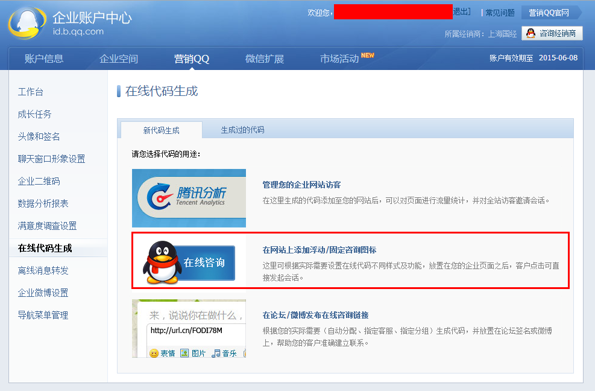
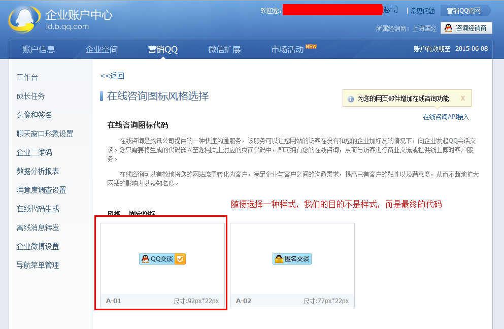
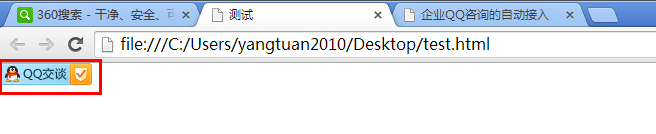
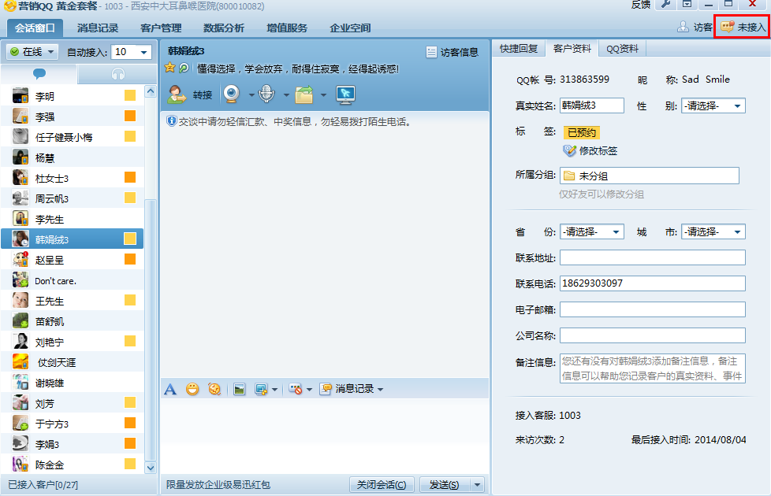
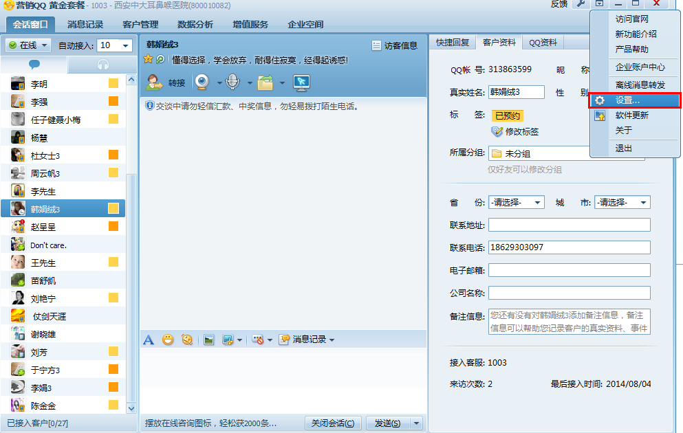
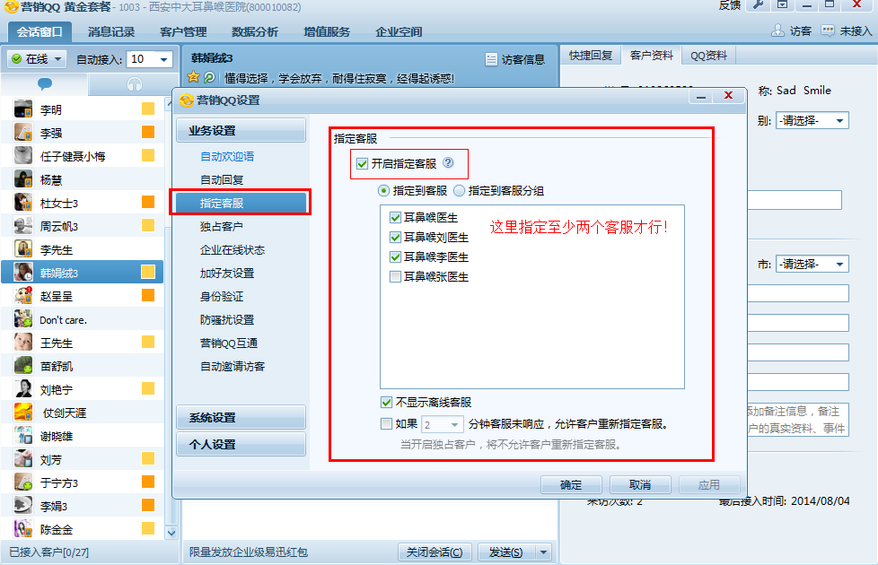

企业QQ咨询的自动接入
默认设置下，当我们打开企业QQ咨询的对话窗口后，并不会将我们自动分配给客服人员，除非我们自己在对话窗口中输入内容，或者点击指定客服，才会触发企业QQ的分配机制，进而产生对话。
而通过企业QQ咨询的自动接入设置，即使用户在打开的企业QQ咨询窗口中没有说话，企业QQ也能在软件中查看到该访客的“来访记录”，从而为营销的后续工作提供便利。
利用这一点，我们可以在用户进入网页后立即通过iframe加载可以自动接入企业QQ的对话链接（该链接的获取在后续部分有步骤分解），从而自动触发我们企业QQ的对话窗口。如果访客使用企业QQ进行对话，那么本次弹出就是有效的；如果访客立马关闭了企业QQ的对话窗口，不用担心，因为他的QQ访问记录已经被记入企业QQ的后台了，咨询人员可以在企业QQ的软件中随时可以向该访客发起会话。
大家可以点击查看现有的网站案例。
同时大家也可以点击下面的相关链接与西安、沪申的指定客服进行沟通。
西安800010082
客服1001
在线代码：<script charset="utf-8" type="text/javascript" src="http://wpa.b.qq.com/cgi/wpa.php?key=XzgwMDAxMDA4Ml8xOTAzNDdfODAwMDEwMDgyXw"></script>
客服1002
在线代码：<script charset="utf-8" type="text/javascript" src="http://wpa.b.qq.com/cgi/wpa.php?key=XzgwMDAxMDA4Ml8xOTAzNzJfODAwMDEwMDgyXw"></script>
客服1003
在线代码：<script charset="utf-8" type="text/javascript" src="http://wpa.b.qq.com/cgi/wpa.php?key=XzgwMDAxMDA4Ml8xOTAzNzdfODAwMDEwMDgyXw"></script>
客服1004
在线代码：<script charset="utf-8" type="text/javascript" src="http://wpa.b.qq.com/cgi/wpa.php?key=XzgwMDAxMDA4Ml8xOTAzODFfODAwMDEwMDgyXw"></script>
沪申800077475
客服1001
在线代码：<script charset="utf-8" type="text/javascript" src="http://wpa.b.qq.com/cgi/wpa.php?key=XzgwMDA3NzQ3NV8xOTAzODZfODAwMDc3NDc1Xw"></script>
客服1002
在线代码：<script charset="utf-8" type="text/javascript" src="http://wpa.b.qq.com/cgi/wpa.php?key=XzgwMDA3NzQ3NV8xOTAzODlfODAwMDc3NDc1Xw"></script>
客服1003
在线代码：<script charset="utf-8" type="text/javascript" src="http://wpa.b.qq.com/cgi/wpa.php?key=XzgwMDA3NzQ3NV8xOTAzOTFfODAwMDc3NDc1Xw"></script>
客服1004
在线代码：<script charset="utf-8" type="text/javascript" src="http://wpa.b.qq.com/cgi/wpa.php?key=XzgwMDA3NzQ3NV8xOTAzOTNfODAwMDc3NDc1Xw"></script>
操作方式
-
进入营销QQ的后台管理，点击左侧导航中的“在线代码生成”链接：

-
在“在线代码生成”页面点击“在网站上添加浮动/固定咨询图标”链接：

-
在打开的“在线咨询图标风格选择”页面随便选择一种样式，我们的目的不是样式，而是最终的代码：

-
在“代码生成页面”将接入方式设置为“指定到工号”并选择“指定客服”，然后点击“生成代码”按钮：

-
点击按钮并自动保存后，会弹出针对“指定客服”进行接入咨询的在线代码：

-
将在线代码保存至测试页面，并运行：

-
点击测试页面中在线代码自动生成的“咨询图标”：

-
点击咨询图标后，在部分浏览器中会弹出如下图类似的“询问框”（下图为谷歌浏览器的效果图），询问用户是否允许打开，此时需要选择“确定”按钮方能触发企业QQ的对话窗口：

-
在上面情况下，不管点击与否，我们的目的已经达到。在谷歌浏览器的“网络面板”中已经得到了我们想要的链接，如下图红色方框所示（即以“tencent://message/”开头的链接地址，也就是真正用来触发会话的本地QQ协议链接）：

- 接下来为了在用户访问网站时能够自动触发企业QQ的对话窗口，我们可以在网页代码中通过iframe来加载这个协议链接。
-
当访客通过上面的自动触发并进入到对话窗口后，我们会看到新的QQ用户正在准备与制定的客服人员进入接入对话：

-
此时在企业QQ软件界面的右上角，有一个“未接入”的按钮处于高亮状态，表示目前有未接入的用户需要接入对话：

-
当我们点击这个“未接入”按钮后，就可以看到目标访客的QQ信息了（即使访客立马关闭了企业QQ的对话窗口，这里的“未接入”面板依然会保留该访客的信息，咨询人员无论什么时候将该访客接入就可以与访客进行对话）：

- 上面所演示的访客进入到“未接入”面板，是因为在企业QQ软件中设置了最大允许的“自动接入”量，当自动接入的量超过这个数后，就会被转移至“未接入”面板。
-
为了实现自动接入以及“未接入”面板的访客显示，必须勾选“开启指定客服”选项，并设置可指定的客服数量大于1：


不足
-
由于触发的链接每次都会自动接入到同一个客服人员，会导致资源分配的不合理。不过该问题可以通过随机加载指定客服的会话链接来避免。
-
在火狐浏览器（Firefox）、苹果浏览器（Safari）、以及360安全浏览器、360极速浏览器、傲游浏览器、搜狗浏览器、世界之窗浏览器等国产浏览器中，会话链接可以自动触发企业QQ的窗口对话，而不会提示用户任何信息。而在谷歌浏览器（Chrome）、欧鹏浏览器（Opera）以及IE浏览器中，出于安全性的考虑会提示用户是否触发本地协议然后才能发起窗口会话。该问题无法得以解决。
-
如果用户登陆了多个QQ，会提示用户选择哪个QQ来触发会话，在不知情的情况下，用户会不知所措。这一点是否有影响呢？各位看官？